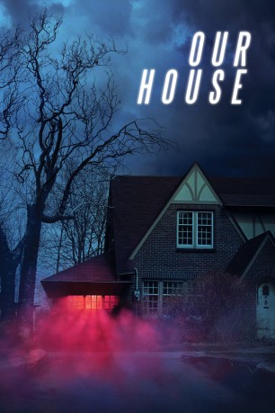

#11022 Our house
 
 IMDB-Wertung: 5.3 / 10
IMDB-Wertung: 5.3 / 10  Tomatometer: 60
Tomatometer: 60  Metascore: 45
Metascore: 45 
Nachdem er beide Eltern bei einem Autounfall verliert, bricht Ethan (Thomas Mann) seine Studien am MIT ab, um sich um seine jüngeren Geschwister zu kümmern. Seinen wissenschaftlichen Drang kann er jedoch nicht abstellen und eins seiner Geräte scheint übernatürliche Vorkommnisse im Familienhaus zu intensivieren...
Jahr: 2018
Dauer: 89 Minuten
FSK:
Land: Kanada Studio: IFC MidnightTonspuren: DD5.1 - ,
Untertitel: Deutsch,
Auflösung: 1080p (1920x1080) Größe: 5140 MB
Genre: Thriller, Horror, Drama
Regisseur: Anthony Scott Burns
Drehbuch: Nathan Parker, Matt Osterman
Soundtrack: Mark Korven
Darsteller:
 John Ralston als Richard
John Ralston als Richard Thomas Mann als Ethan
Thomas Mann als Ethan- Percy Hynes White als Matt
- Lucius Hoyos als Dag
- Kate Moyer als Becca
 Nicola Peltz als Hannah
Nicola Peltz als Hannah Marcia Bennett als Marie
Marcia Bennett als Marie Robert B. Kennedy als Tom
Robert B. Kennedy als Tom- Aaron Hale als Adnan
- Xavier de Guzman als Ben
- Evan Marsh als Owen
 Neil Whitely als Jacob
Neil Whitely als Jacob- Carlyn Burchell als Ms. Nash
- Jennifer Nichols als Female Figure / Karen
 Phillip Jarrett als Moving Guy
Phillip Jarrett als Moving Guy Christine Horne als Jess (uncredited)
Christine Horne als Jess (uncredited)- Stefanie Nakamura als Jodie (uncredited)
- Allison Hossack als Lila
- Ryan Wilson als Male Figure #1
- Magda Vasko als Male Figure #2
Datei: X:\2018(N-Z)\Our house (2018, FSK, 1920x1080).mkv seit 18.04.2019
Festplatte: HD 2018(G-Z)-2019(A-Z)
 Es gibt insgesamt 172 Filme in der Gruppe '2018(N-Z)'
Es gibt insgesamt 172 Filme in der Gruppe '2018(N-Z)'